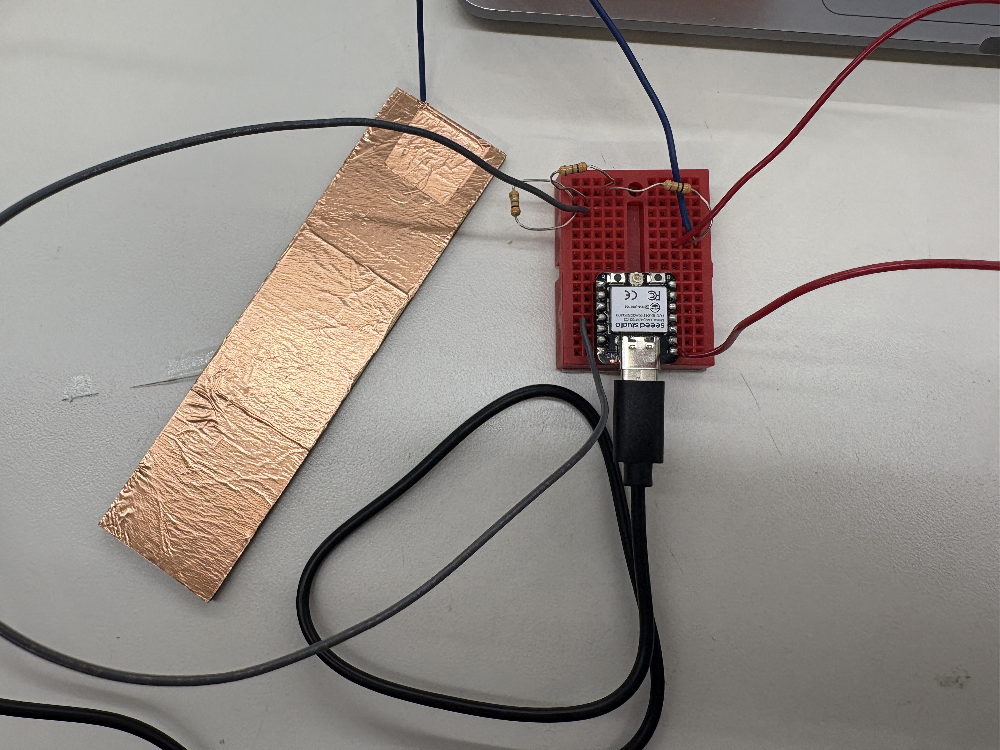
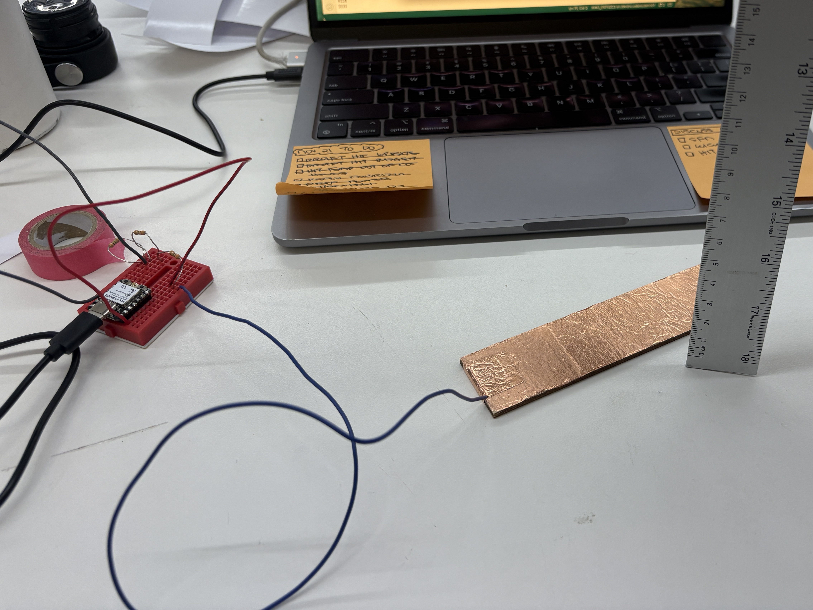
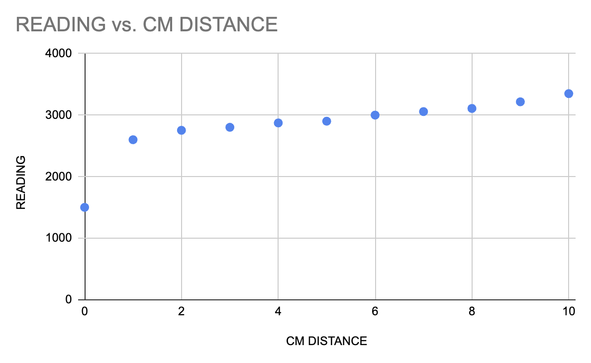

<div class="textcontainer">
<p class="margin"> </p>
<h1>➡️ Week 6: Electronic Inputs ⬅️</h1>
<br></br>
<h2>Part I: Make and calibrate a capacitive sensor</h2>
<br></br>
<p class="p1">For this week&rsquo;s assignment, I experimented with building a simple proximity sensor. I began by laser-cutting a plywood plank, covering its surface with conductive copper tape, and attaching a wire to one end. That wire served as the sensor input, which I connected to the breadboard along with a 3 M&Omega; resistor and a sense wire.</p>
<p></p>
<p style="text-align: center;"><em>Capactive sensor wiring</em></p>
<p class="p1">After writing a basic Arduino sketch to measure proximity, I ran into an issue where the serial monitor only returned values of 1 or 2. I tried several troubleshooting steps&mdash;shifting the pins, grounding the back of the wood plank, and adjusting my wiring&mdash;but the biggest improvement came from increasing resistance. By placing three resistors in series for a total of 9 M&Omega;, the sensor began responding reliably.</p>
<p></p>
<p style="text-align: center;"><em>My extremely professional calibration setup ...</em></p>
<p class="p1">To calibrate, I measured the distance between my hand and the sensor while slowly moving closer. The resulting plot shows that the sensor has limited sensitivity at longer distances (1–10 cm) but becomes much more responsive upon direct contact. This makes sense given that the capacitive effect increases dramatically when a conductive object is very close or touching the plate, causing a sharper change in the sensed value.</p>
<p></p>
<p class="margin"> </p>
<div class="flexrow">
<a id="btn" href="Capacitive Sensor.zip" download>Capacitive Sensor Code
</a>
</div>
<p class="margin"> </p>
<br></br>
<h2>Part II: Configure and calibrate another sensor</h2>
</div>